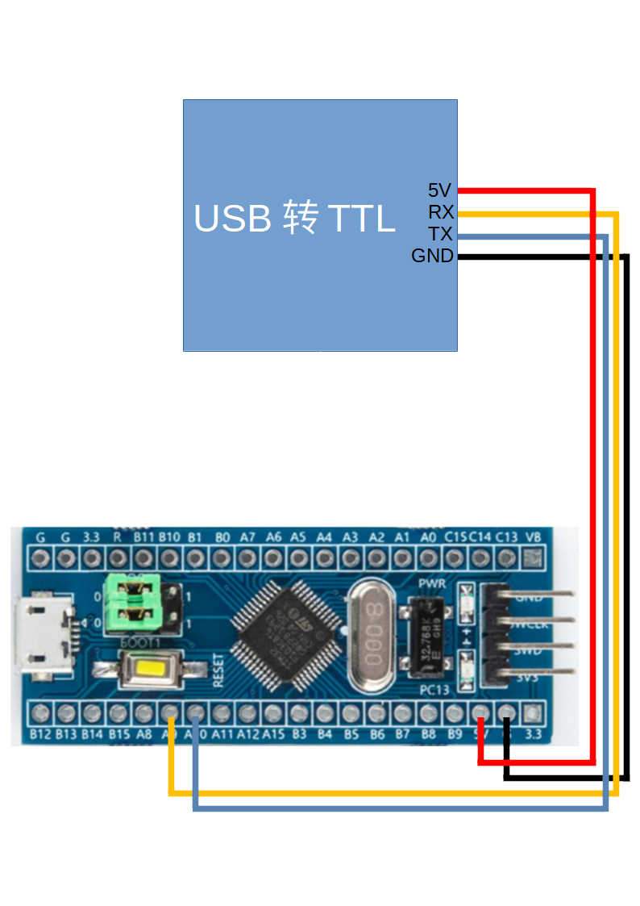
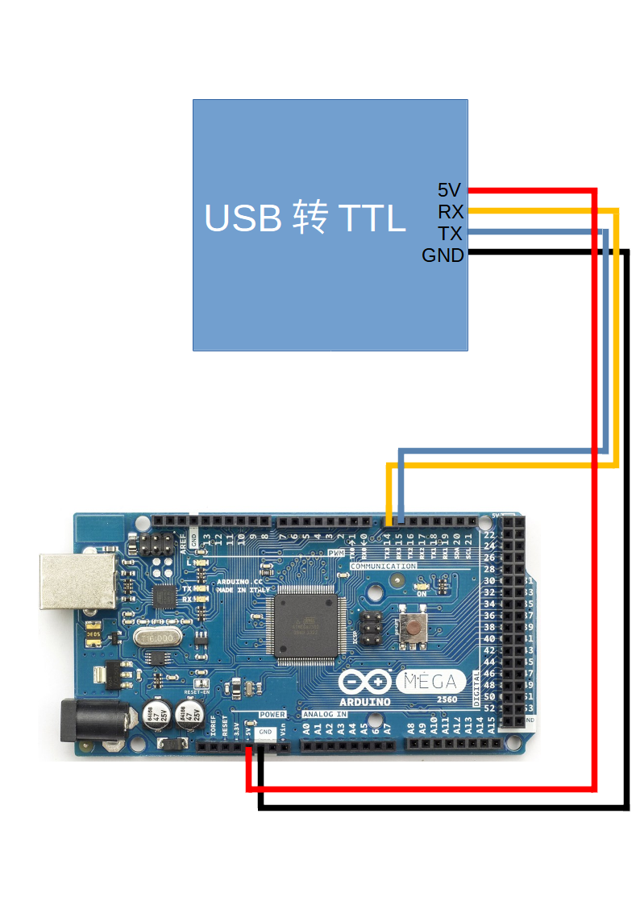
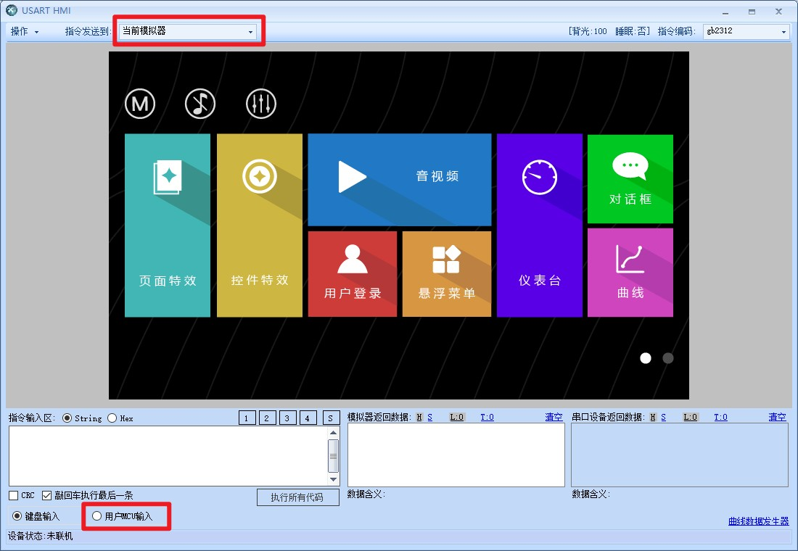
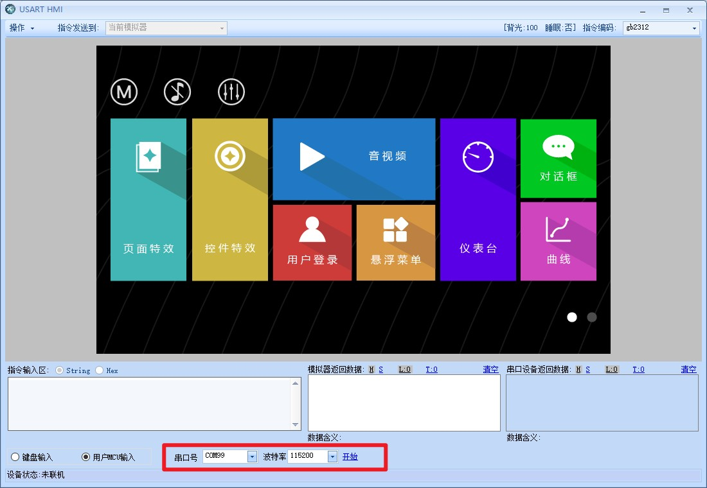
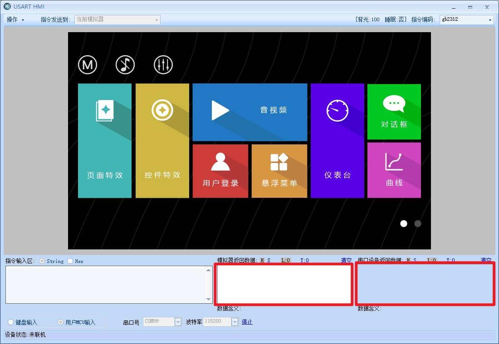
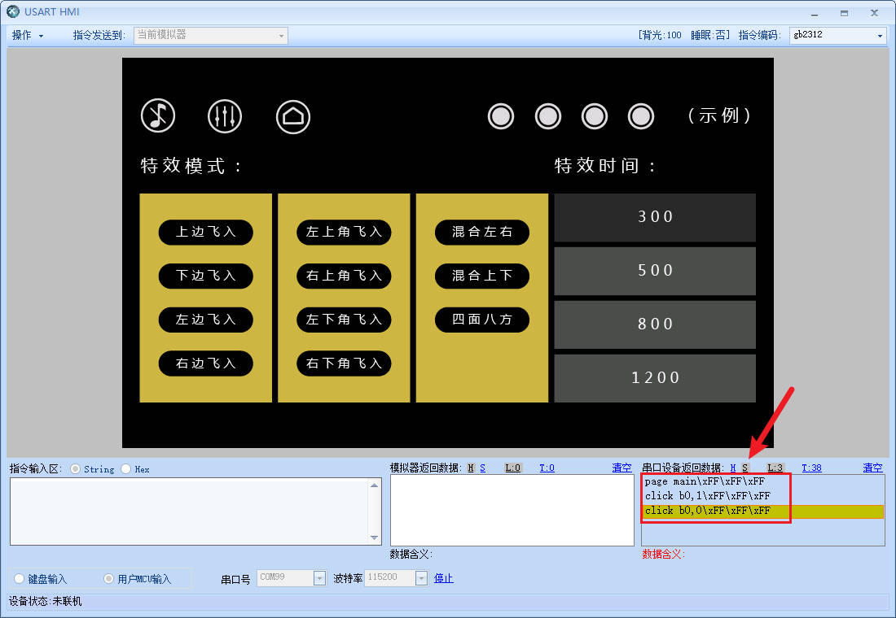

模拟器(电脑)与单片机连接
提示
淘晶驰强大的模拟器功能几乎能够实现与实体屏幕几乎一样的功能，除外部IO，电阻屏校准等实物特有的少数功能外，几乎都可以在屏幕上完全仿真
您可以提前通过(电脑上的)模拟器和单片机之间进行通讯，在屏幕样品快递之前就能完成大部分功能的开发和调试，大大降低开发和选型成本
模拟器连接stm32
注意
请根据自己的需求判断是否需要连接5V供电

模拟器连接arduino
注意
请根据自己的需求判断是否需要连接5V供电

1.必须保证上面选择的是“当前模拟器”，下面才能选择“MCU输入”

2.点击开始，就可以直接和单片机进行通讯了

3.所有调试信息都会显示在红框中，左边的是模拟器发给单片机的数据，右边的是单片机发给屏幕的数据

4.H代表hex模式，S代表字符串模式
5.当切换到字符串模式时,可以清晰的看到单片机发送过来的指令和结束符,并且模拟器可以实现对指令的响应
